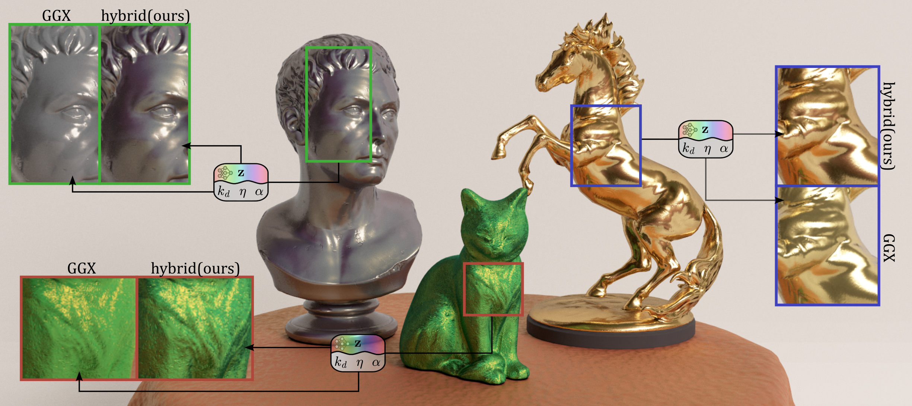

Over the past decade, microfacet-based BRDF models have formed the foundation of real-time rendering pipelines. Despite their widespread use, they often fail to reproduce subtle appearance effects arising from complex light–surface interactions, which have led to the emergence of specialized physics-based models for specific optical phenomena (e.g., diffraction, iridescence, multilayers). Although more accurate, these models lose versatility and lack performance for real-time rendering. Recently introduced, neural models have demonstrated their ability to approximate BRDF reference data coming from measurements, simulations, or even complex shading networks. However, most current neural models require relatively large networks, making them costly for real-time rendering. In this paper, we introduce a hybrid model that combines a GGX-type microfacet model and a neural model to leverage the best features of both representations. The neural component corrects the appearance approximated by the microfacet component, allowing much smaller network than in existing neural models. We show that, at identical memory cost, our model approximates measurements better than state-of-the-art neural models for a low evaluation overhead compared to a microfacet-based model. Furthermore, our hybrid model remains easily editable by artists and benefits from an important sampling scheme, making it attractive for both offline and real-time rendering.
Interactive BRDF viewer. Drag to orbit the camera, scroll to zoom. Change BRDF models and parameters in real time. In environment map mode, the renderer uses multiple importance sampling (MIS) between BRDF and envmap CDFs.
@article{10.1111:cgf.70540,
journal = {Computer Graphics Forum},
title = {{A Hybrid Neural-Microfacet BRDF Model for Real-Time Rendering}},
author = {De Oliveira, Louis and Karpova, Anastasia and Nader, Georges and Houdard, Antoine and Mézières, Pierre and Rioux-Lavoie, Damien and Pacanowski, Romain},
year = {2026},
publisher = {The Eurographics Association and John Wiley & Sons Ltd.},
ISSN = {1467-8659},
DOI = {10.1111/cgf.70540}
}